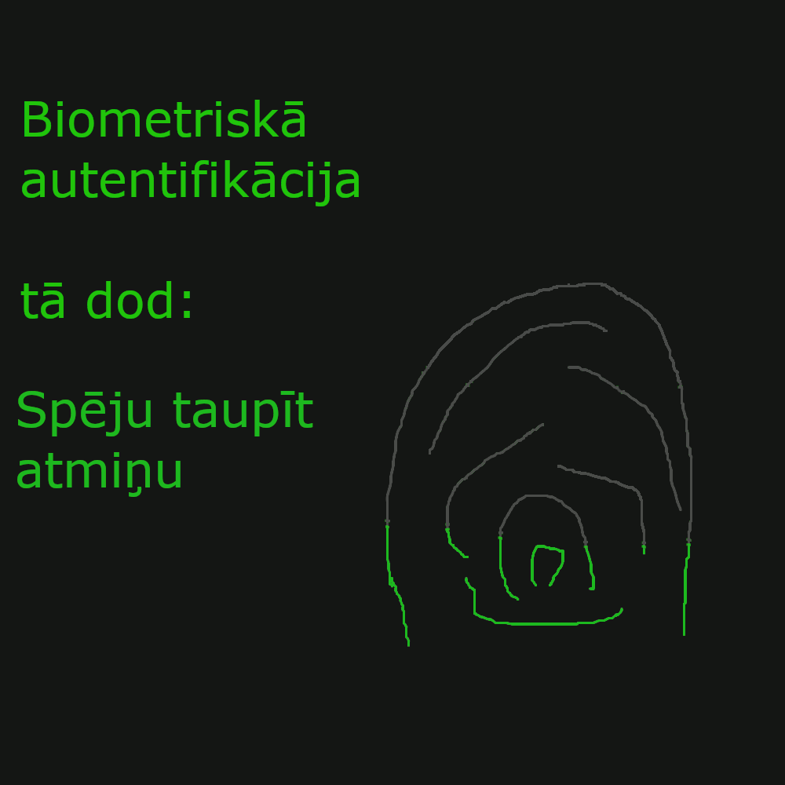

Biometriskā autentifikācija apliecina lietotāju pēc sevišķām bioloģiskām īpašībām, kā piemēram, pirkstu nospiedumiem.
Guvums: krāpnieks nevar uzlauzt ierīci, jo viņš nevar dabūt biometriskos datus.
Zaudējums: zaudētais ir privātums un spēja ļaut citiem cilvēkiem pieslēgties, kuri nav bijuši reģistrēti.
 Mans avotsFona attēls ir manis taisīts